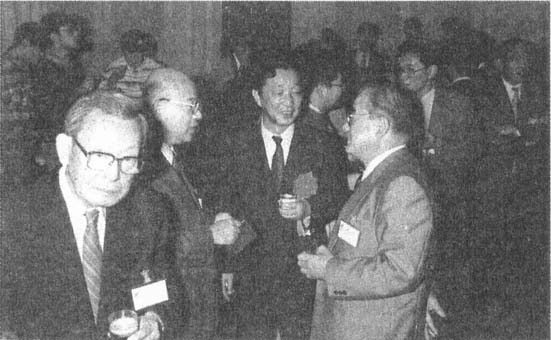

ＩＣＯＴ１２年プラス
東京大学教授 ／ 渕 一博
情熱の持続
私は、１１年間のＦＧＣＳプロジェクトでは、すっか り皆さんのお世話になったわけですが、この２年間 のポスト・プロジェクトでは第一線から退いて、 後方支援という立場になりました。それで、この 基調講演というのを仰せつかったわけですが、１２ 年余りにわたるプロジェクトと今後について、若干 感じていることをお話させて頂こうと思います。
１０年プロジェクト、プラス１年と、その後２年の 後継プロジェクトで１３年になるわけですが、プロ ジェクトの準備段階にもかなり充実した議論が あったわけで、そういう段階も入れると、１５年の プロジェクトが今や終わろうとしているわけで す。この時点で一番強く感じているのは、情熱の 持続という問題です。
考えてみますと、とにかく大変長丁場であった と思います。しかしながら、世界史的に考えます と、１０年余りというのは一瞬の出来事でもありま すし、個人的な回想でも、この１０年あっという間 に過ぎてしまったという思いがあります。
しかし、それぞれの個人の人生の中での１０数年 いうのは大変長いわけでありまして、ＩＣＯＴに関 連して活躍した多くの若手の中には、３０歳代の１０ 年をまるごと第五世代プロジェクトに費やした人 もたくさんいるわけです。まさに研究者としての 人生の一番大事な、しかも充実した時期をこの プロジェクトに捧げてくれた人たちがたくさんい る。十年選手もいますし、多くの人達は３年から５ 年だったと思いますが、そういうローテーション の中で活躍された、いろいろな人の人生を抱えて 進んできた１５年だったのではないかと思います。
なぜ１０数年の情熱の持続があったのかというこ とを考えてみると、ひとつは、多くの人たちそれ ぞれの情熱が持続した結果だと思います。このプ ロジェクトの期間中、私は研究員たちに、全力疾 走して最後にばったり倒れようじゃあないかとい うことを、たびたび申していたわけです。実に幸 いなことに、この十数年の全期間を皆さんが全力 疾走してくれたと思います。ばったり倒れるとい うところだけが違っていて、倒れずにさらに頑 張っていこうという多くの若手、中堅研究者が 育ったということは、プロジェクトに参加した私 にとって、好運なことであったと思っています。
いろいろと思い返しますと、この２年間の後継プ ロジェクトをやるについても、大変激しい議論を 続けた記憶があります。私自身は、技術的にはい ろいろともったいない部分もあるけれど、１０年プ ロジェクトであるから、ここはきっぱり終了した 方がいいのではないかと唱えたのですが、片 や、技術というのは、単に自分たちが作るだけで はなくて、多くの人に使われるような手筈までし なければ意味がないという議論があったわけで す。
普通ですと、上の方に立って比較的楽をして た、例えば私のような立場のものがそういうこ とを唱える。もっとやろう、と。しかし、若い連 中はくたびれ果てて、もういいと言う。
ところ が、このプロジェクトの場合には、幸いなことに それが逆でした。１０年近く走り続けた若手、とい うか今はあまり若くありませんけれども、そうい う連中が、なお情熱を持続させて今後もやりたい という、技術者としてあるべき姿を見せてくれた という好運もあったわけです。
１０年プラス１年、加えて２年
その結果、１０年プラス１年、加えて２年のプロ ジェクトで、いろいろな技術的成果が出まして、 これは国内だけでなくて、国際社会でもいろいろ と利用していただけるということになりました。
またよく考えますと、このプロジェクトは、他 にもいろいろな意味で好運に恵まれていたような 気がします。研究を遂行するのは、研究所に集約 された研発者が中心であったわけですが、その研 究者たちが大変伸び伸びと闊達に研究を進めるこ とができた。研究所で議論した方針を中心に、プ ロジェクトを展開することができた。これは、世 の中ではかなり珍しいことだったと思います。こ れについては、このプロジェクトの親元である通 産省の方々も当初から大変よく理解してくださっ て、研究の内容については、ほぼ全面的に研究所 にまかせてくださった。その後も温かく見守ってい ただきまして、かつ、予算面その他においては大 変な努力をしてくださり、研究を支えていただいたとい うような、研究グループと行政グループの大変望 ましい連携関係、信頼関係があったということを 強調したいと思います。これも、本来あるべき姿 ですが、実現できるというのは大変珍しい事だと 感じています。
また、行政サイドだけではなくて、学会的には もちろん、ＩＣＯＴ研究所を取り巻いている国内の大 学、研究所の皆さんや、それだけでなく、全世界 の研究者の皆さんの応援、あるいは関連した研究 の展開というものがあって、この１０数年のプロ ジェクトが進んできたかと思います。
ということで、この１０数年の多くの人々の情熱 の持続ということを考えますと、これは単にどこ かの命令とか、あるいは狭い意味の義務感だけで できたものではないのだろうという気がします。 結局は、このプロジェクトに関与したそれぞれの 人、研究者もそうですし、それをサポートしてく れた方々もそうですが、それぞれの人の情熱が結 果的に結集されて、持続することができた。
それは何だろうと考えますと、少し非論理的に なりますが、何らかの意味で皆さんが歴史の展開 についての予感を持ち合わせていたからではない のか、その歴史の流れ、これは自覚的に論じたり するだけではなくて、一種動物的感覚で、歴史が 動いているという予感を、それぞれの研究者や多 くの周りの人たちが受け止めていたということ ではないかと思います。
第五世代プロジェクトは、プロジェクトですか ら組織的にやってきたというふうにも見えますが、 片や、実はそれぞれの人の、それぞれの第五世 代プロジェクトがあって、それが結果的にほぼ同 じようなベクトルを向いていた。その結果とし て、１０数年にわたる情熱の持続があったのではな いかと思うわけです。私もその中に関与して、大 変好運な、幸福な１０数年を送ることができたと 思っています。
情報処理技術も激動の１５年
今、申し上げたのは人々の１５年間という感じで すが、技術自体の１５年間を振り返ってみますと、 これもまた、なかなか激動の時代であったわけで す。特に８０年代というのは、技術的にもいろいろ な動きがありました。プロジェクトが発足した直 後にＡＩブームというものが起こりましたし、その 後、ニューロ、ファジーブームというものが起 こった。それらに対しての反省もあったかも知れ ませんし、あるいはコンピュータ産業の曲がり角 ということもあって、ダウン・サイジングとか いったことも唱えられました。現在、マルチメ ディア・ブームであったり、インターネット・ ブームであったり、いろいろな言葉が作り出され て、ブーム的な現象を呼んだという特徴があるよ うな気がします。
大変賑やかでさまざまな展開があったという意味で はいいのですが、一面においては、これは８０年代 の日本経済、世界経済におけるバブル現象に対応 したところがあったのではないか、バブル技術的 な側面があったのではないかと思います。
例えばＡＩブームにしても、このプロジェクトが 発足した時には、人工知能なんてものにならない と言われていたわけですが、数年後に大変なブー ムが起こった。その後、これには限界があるとい うので、別のキーワードでブームが起こるという ように、技術の世界というのは大変激動してお り、次々に新しい展開を見せているように見える わけです。
しかしながら、実は個々の流行よりは、もっと 大きな技術の底流というか、技術の進展があっ て、その上でいろいろな言葉が発明され、場合に よっては、それに頼って活動したり、その結果幻 滅をしたり、気をとり直したり、というようなこ とではないかと私は思っています。残念ながら、 私は新語を発明する才が足りなくて、ついつい地 味な言葉しか使えないのですが、大事なのは表面 的な言葉ではなくて、技術はどこに向かって進ん でいるかという、見通しではないかという気がし ます。
現在、コンピュータの世界、あるいは情報処理 の世界でもいろいろと迷いもあるし、産業的には 大変な時代を迎えているわけです。研究的にも、 どちらに向いたら良いかという迷いもなくはな い。しかしながら、その歴史の流れとそこにおけ るコンピュータ技術の進展というものをしっかり見 れば、大きな流れは変わっていませんし、着実に 前進していると思います。
これもいくつかに整理されるわけですが、８０年 前後から急速に進み始めたパーソナル・コン ピューティングでもそうです。言葉としては、現 在ではもう使い古されているかも知れませんけれ ども、当時は新しくて、この傾向はまだまだ続く わけです。言葉が古びたからといって、それが提 起した問題点や方向性は終わるわけではなく、さら に大きく展開していくはずです。
８０年代というのは、パーソナル・コンピュー ティングというものを中心に展開し、また、片 やネットワーク技術が展開することによって、現 在のような状況をもたらしているわけですが、コ ンピュータの役割からしますと、個人の側から見 て大変役に立つということと並んで、社会組織に おけるインフラストラクチャの一つとしてコン ピュータ技術が定着し、それが発展していく。こ の方向性は当たり前のことで、２０年位進んでいま すが、これ自体もとどまるのではなく、さらにどんど ん進んでいくわけです。その中にいろいろ技術的 な課題もちりばめられるわけですが、そういう大 きな流れ自体は、今見え始めたわけではなくて、 十数年も前にすでに見えていたと私は思っていま す。
知識工学は２１世紀に花開く
ですから、今大事なのは個々のはやり言葉で一 気一憂するのではなく、今私が申し上げたような 歴史の流れをしっかり見据えて、その流れの延長 で考えていけば、新しい研究もいろいろ展開でき るはずですし、産業も新しい展開を見せるのでは ないか、という気がしています。
ですから、このプロジェクトでは、先ほどもご 紹介いただいたように、知識情報処理を指向し て、そのための新しいコンピュータ技術として並 列推論技術を展開していくというのは、まさにそ の通りでありまして、この知識情報処理というの は、かつてのＡＩブーム、あるいはそれが終鴛した 時点で終わったのではなくて、むしろこれから始 まるということであります。我々が当初から言っ ていたように、知識処理技術、あるいは知識工学 が本当に花開くのは、２１世紀である。２０００年以前 にビジネス化されて、その果実が全部刈り取られ るものではなくて、本当に展開するのはむしろ２１ 世紀の課題である。２１世紀の準備のためにどうい う技術が必要かを探る意味で、知識処理指向とい うことを選択したと記憶しています。
その観点というのは、今考えても間違っている とは思いません。むしろ、いろいろと技術的な蓄 積ができて、社会も成熟したということの上に 立って、研究面でも産業面でも新しい展開を見せ るだろうと思います。これは２１世紀の課題だろう というのは私の予測ですが、そういうことに立っ てこの並列推論という技術的なキーワードを選択 して、それを追求していくというのが、この１０数 年であったと思います。世の中には、はやり言葉 が終わるとそれで終わり、ということがあります が、現実にはむしろ流行現象が終わった後に着実 な進展があって、それが蓄積され、場合によって は再びブーム現象を引き起こすということかと 思っています。

そういうことでこのプロジェクトは、特にプロ ジェクトの後半では並列推論というところに集中 してきたわけですが、皆さんご存知のように、こ こにおいてもいろいろな展開がありました。例え ば１０年プロジェクトが終了した時に、ＦＧＣＳ’９２をや りましたが、その時、いよいよ並列コンピュー ティングの時代が来る、第五世代プロジェクトは そのための技術の芽を作った、と申し上げたわけ です。
しかし、皆さんご記憶かも知れませんが、９２年 の６月という段階でも、そういう見通しは必ずしも 受け入れられたわけではなかったような気がしま す。従来的な見通しから、並列コンピューティン グの時代なんか来るはずがないという、強力なコ ンピュータ専門家の意見もありました。片や、 第五世代プロジェクトのシンパであったような人 たちの中には、並列コンピューティングの時代が 来るとＩＣＯＴは言っていたのに、現在まだ来ていな いではないか、という幻滅感を表明した人もいた わけです。
しかしながら、現実は、並列の時代が来ると ＩＣＯＴが言っていて、やっぱり来なかったじやない かというような意見が出されたその直後から、大 きく進展を始めているわけでありまして、現在こ の大規模な、高機能なコンピューティングは、並 列コンピューティングに進むということについて の疑念というのはあまりない。むしろその方向 で、どんどん進もうということになっているのだ ろうと思います。
並列コンピューティングの時代へ
しかし、この間題をもう一度考えますと、ハー ドウェア的に並列コンピュータを作るのは難しく ないと昔から言われていました。難しいのはそこ におけるソフトウェアの構築の問題だと、もう１０ 数年来、２０数年来、言われていたわけです。現 在の並列コンピューティングの、一種のブームま ではいっていないかもしれませんが、急速な流れ というのは、本当にそのソフトウェアの問題をク リアしたからなのであろうかと考えますと、世界 全体で考えると、そうではないと私は見ていま す。
しかしながら、この場合は歴史の予感というだ けですが、歴史というものはやはり着実に進むわ けでありまして、半導体技術も進んだという背景 もありますが、いずれにしても、並列の方に進ま なければいけないと歴史が命じているのだと思い ます。
ですから、理屈から言うと、並列コンピューティ ングのソフトウェア技術の問題を世の中が解決し ているわけではありませんが、やはり歴史はその 方向に動くと思っています。つまり、この間題に もう一度思いあたって、ソフトウェアの構築に取 りかかるということが起こるはずです。
その時に、手前みそですけれども、ＩＣＯＴが１０数 年間で蓄積した並列推論の技術というのは、これ だけで足りるとは言いませんが、大変役に立つ参 考資料になる。あるいは次の時代の並列コン ピュータ・ソフトウェアの発展のための土台、踏 み台になると思っています。
ということで、プロジェクトの後半に進めてき た並列推論の、特に並列の部分に関しては、世の 中もその方向に動いてきています。これからそう いう技術がいろいろな脱皮を遂げながら、産業界 に定着していくのではないかと思っています。で すから、新しいコンピュータ技術、ハード、ソフ トについて貢献するということでは、それなりの 成果を上げたと思っています。
しかしながら、すべての問題が解決されたわけ ではありません。方向性として述べていた、知識 とかインテリジェントな機能というものに関して は、ＩＣＯＴ１０数年でいろいろと研究して、それなり の研究成果が上がっているわけですが、これはま さに大課題でありまして、これに関する研究とい うのは、もう一度世の中全体が気を取り直して立 ち向かわなければいけない問題だと思っていま す。
「実験情報学」のすすめ
振り返りますと、歴史というのは面白くて、技 術的な課題にもある種の周期的現象があるように 思います。これは１０年周期という経済的周期もあ りますが、技術の世界では２０年周期があるような 気がします。１０年あるものを追求していたのが、 あるところで飽和する。そこで、扱わなかった新 しい問題を次の１０年に一生懸命やる。しかしなが ら、それ以前に扱った飽和したものについて、問 題をすべて解決したわけではないので、２０年後くらい に再びその問題を取り上げる、というような現象 があるような感じもしています。
ＩＣＯＴ１５年というのは、コンピュータ技術のハー ドウェア、ソフトウェアに戻るということで、並列とか 推論機構の実現とかということであったわけです が、今、多くの皆さんの念頭にある課題というの は、情報というものをもっと自然な形で扱えない か、あるいは、人工的な情報ではなくて、自然に 存在する情報というものをどう活用していくかと いうことに向いているような気がします。例え ば、マルチメディア・ブームというのは、そうい う問題意識の一つの現れだろうと思います。
思い返しますと、実は２０年ほど前にも、そういう ことが大事だという動きがありました。通産省の プロジェクトで、パターン情報処理システム・プ ロジェクトという、大変大がかりな、しかし基礎 的な研究のプロジェクトがありました。そこで 扱ったのが、現在で言う、まさにマルチメディアそ のものでありまして、音とか画像とか文字とかい うものを総合的に扱えないかということでスター 卜したわけです。
その時に私は、そういう研究をするのに一番大 事なのは、実験的精神ではないかということで、 実験情報学というものを唱えて進めようとしたわ けです。
実験情報学の心というのは、それぞれのメディ ア、特に、自然なメディアというのは、勝手に 作った人工的な構成物ではないので、そこになん らかの法則性が潜んでいるはずだ、それを暴くに はまさに自然科学で推進された実験精神というも ので取り組まなければならない、単に観念的に理 論を作るのではなく、それぞれのメディアに即し て、その実態を見極めて、その上でそこに潜む一 般的な法則を見つける。そういう方法で努力しな ければいけないのではないかという、精神の問題 をまず一つの大事な課題としてあげました。
もう一つは、実験的に研究を進めるためには、 研究環境の整備というのが不可欠なわけです。紙 と鉛筆だけで展開するのであれば、天才を待てば いいのかもしれませんけれども、しっかりした実 験的アプローチをするためには、研究環境整備が 大事だということです。
その二つを柱に、実験情報学というものを提案 した記憶があるのですが、現在の情報処理社会の 現状といいますか、情報処理研究の現状を見ます と、もう一度そのことを唱えてもいいのではない かという気がします。
幸いにしていろいろな技術が進歩したために、 ２０年前と比べると、各メディアによる情報の扱い は画期的に良くなってきている。しかしながら、 本当の問題というのはまだ解決されていないわけ です。画像に含まれている本当の構造、あるいは 音声の構造、そういうものが解明されたかという と、ほとんど解明されていなくて、状況は２０年前 とあまり変わっていません。しかしながら、その 研究を支えるいろいろな技術というものは、この ２０年に確実に蓄積されてきている。ですから、か け声はマルチメディアであっても、自然情報学で あってもいいと思いますが、もう一度取り組むよ うな課題というのは、きちんと存在していると 思っています。
情報処理技術の展開は速いと言いますが、本当 の課題というのは実に豊富に残されているわけ で、これからの若い研究者たちが何も研究テーマ がないといって嘆く必要はない。ただ、残ってい るのは、先輩たちが途中までやって、そこで諦め た難問の山だと思います。しかし、難問が存在す るというのは研究者にとってまさに恵まれた状況 だと私は思うので、そういうことで若手の人たち を大いに激励したい、あるいは、その好運がうら やましいと私は思っています。
「バーチャル・インスティテュート」
十数年のプロジェクトで技術的にそれなりの成 果を出して、この成果を、これからの展開のひと つの材料にしてもらえるのではないかと思いま す。また、このプロジェクトを通して、いろいろ な研究者が揃ったわけでありまして、そういう人 たち、あるいはＩＣＯＴと、精神的、技術的に協力し てくれた非常に幅の広い人間のネットワーク、そ れも国内だけではなくて、世界中にそういうネッ トワークを作ることができたと思いますが、そう いうものをもって、この１０数年のプロジェクトが終 わりを告げる時期になったわけであります。
集中的に、集約的に研究を進めるという、この 十数年の時代は終わって、これから始まるのは新 しい現象だと思います。一つは、狭く考えると、 第五世代プロジェクトで作り出したフリーソフト を含む技術的な成果、あるいは世界中に広がった 人間のネットワークを通して、これから技術が拡 散していくということですが、それだけではない ような気がします。
やはり、歴史というのは次から次へと動いてい るわけで、２０年繰り返しといっても、似ている部 分もあれば、たいへん変わっている部分もあるわ けです。現在、この歴史の流れというのは、単に 研究だけでなく、むしろ世界全体をゆるがしてい るわけで、政治的に考えても大転換が行われた時 期であるわけですし、経済的にも新しい展開の時 期に入っていると思います。そういうことで言い ますと、実は世の中全体が、大規模な、集中的な 努力ということだけではなくて、もっと分散的な 拡大された活動、形態という方向に動いているの ではないかという気がします。
産業社会でも、今、組織論というのは大変な問 題であるわけですが、従来型の大組織だけではだ めで、もっと小さな組織を基にした活動をしなけ ればならない、という方向に動いているかと思い ます。これは、研究の世界にも当てはまるのでは ないかという気がしています。
１９世紀以来、研究活動がどんどん大規模化して いくのに伴い、その組織も大規模化してきたわけ でありまして、日本の場合は特に戦後ですが、い ろいろな研究所が大規模化してきました。
しかしながら、いわゆる大研究所や巨大な研究 組織というものが、新しい技術課題を解決するた めのこれからの研究組織としてふさわしいかとい うと、やはり大きな疑問があるような気がしま す。新しい組織論は、いわゆる企業組織が展開す る以前に、本来は身軽であるべき研究所が、もっ と先進的に展開するべきではないかという気がし ていますが、現在の日本では、その動きは必ずし も活発ではないように感じています。
これはだいぶ前の思い出話になって恐縮です が、１９７０年前後に私のいた今の電総研で、「姿な き研究所」を作ろうという動き、あるいはそうい う議論が行われたことがありました。孤立的な研 究所ではなく、研究者が横に連絡をとることに よって、新しい研究スタイル、あるいはそれを通 した成果を期待しようという議論があったという 記憶があります。残念ながら当時はまだ時代がそ こまでいっていなかったというか、早すぎた議論 であった気がするわけで、その構想は、その時に は実現されなかったと思います。しかし、今考え ますと、姿なき研究所というのは、これから大事 な概念になってくるのではないかという気がしま す。
姿なき研究所というのは英語にすると何と言う かと考えると、はやり言葉を使いますと、「バー チャル・インスティテュート」ではないか。世間 では、バーチャル・コーポレーションとか、バー チャル何々とかいろいろ議論されていますが、研 究ということで言いますと、バーチャル・インス ティテュートにあたるのではないかと思います。
それでは、２０年前にバーチャル・インスティ テュートが実現しなかったのは何故だろうか。当 時の状況とか、いろいろな原因があると思います が、一つのポイントは、その時代はまだ情報流通 のグローバリゼーションとでも言うか、そのための テクノロジーが整っていなかったと思うんです ね。７０年ですから、今をときめくインターネット の前身であるアーパネットができたかという頃な わけで、議論を急げば、そういうものをべースに ということであったわけですが、こういうもの は、世の中全体に広がるということが必要な条件 だったと思います。しかし、現在では、コン ピュータ・ネットワークを中心とする新しい活動 形態というのは、私が言うまでもなく、まさに多 くの皆さんの関心事でありまして、その上にのっ て、先ほど言ったようなバーチャル・コーポレー ションとか組織の再編ということが進められてい ると思います。
日本がどうなるか、アメリカのような形で進む かどうかは不明ですが、やはりそれは一つの大き な流れとして出てきた。ここで大きいのは何かと いうと、組織は大きくあるべきか小さくあるべき かという、そういう精神論的な、あるいは観念論 的な議論ではなくて、まさにそういう組織のあり 方を支えるためのテクノロジーが整い、広まって きたということにあると思います。
姿なき研究所の新たな実験
ですから、ＩＣＯＴ１０数年の集中型プロジェクトが 終わって、その成果もフリーソフトの形で公開さ れるということで広がっていく、人についても、 集中研からいろいろな大学や研究所に散ってい く。これは「拡散」という捉え方もできますが、 より積極的に捉えれば、世の中が片方で用意して くれたコンピュータ・ネットワークを中核とする 技術の上に立って、新しいバーチャル・インス ティテュート、仮想研究所の実験をするための素材 を１０数年間で用意したということもできるのでは ないかという気がしています。
内田俊一君も後でバーチャル・インスティテュート の話をすると思います。ＩＣＯＴ関連の活動だけです べてというわけではありませんが、これは一つの 先進的な、実験的なものであろうかと思います。 ２０年前の言葉で言えば姿なき研究所の新しい実 験、はやり言葉で言えばバーチャル・インスティ テュートの可能性の追求というのが、これから の、ポストＩＣＯＴとも言えなくなったＩＣＯＴの活動 であっていいのではないか。そのためには、そこ に育った人たち、あるいは一緒にやってきた全世 界の人たちの協力が必要ですし、研究者だけでは なくて、それを取り巻くいろいろな行政関係、あ るいは産業界のいろいろな人の支援が必要だと思 いますが、そういうのを前提にした新しい活動が 始まることを、期待したいと思っている次第で す。
ということで、私の講題は「集中から拡散 へ」、副題を「ＩＣＯＴ１２年プラス」としたのです が、この「プラス」というのは、１２年が１３年か１５ 年かというプラスではなくて、これから始まる数 十年、このプラスの期間はどう展開するだろうか ということに議論をもっていきたい、そういう気 持ちでこのような副題をつけさせていただいた次 第です。
少し長々とお話しましたが、これで私の話を 終わらせていただきたいと思います。